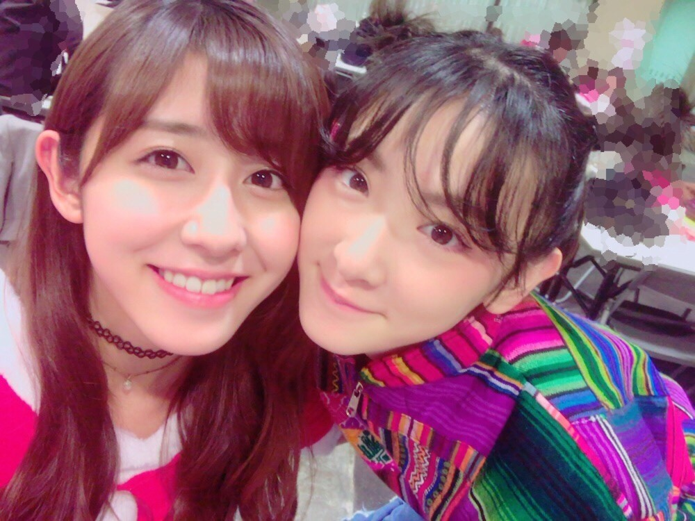

| 2016/12 22 Thu | 斎藤ちはる 歴代サンタ。 |
ちはるーむへようこそ。

生駒ちゃん。
いこたむ。
いこちゃん。
いこま。
大好き(﹡ˆ ˆ﹡)
誰よりも周りの事を、乃木坂の事を考えて
みんなの変化に気付いて
褒めたり慰めたり親身になって考えてくれて
仕事に対する意識も強くてかっこよくて
いこまは本当に素敵！！
アンダーの事も凄い思ってくれている。
考えてくれている。
アンダーメンバーみんな生駒のこと好きだよ！
ふふ
-------------------------------------♡
今日はここ数年で着た
サンタコスの写真を一気に載せます◎
2013年サンタ
2014年サンタ
2015年サンタ
2016年サンタ
あなたは何年のサンタが好き？
-----------------------------------------♡
♬ ChihaMusic
「スノースマイル」BUMP OF CHICKENさん
数あるBUMPさんの曲の中で
私が一位二位を争うくらいに
好きな曲がスノースマイル。
雪が降っている時の歌かなと思えば
実はそれはただの夢物語で。
幸せな二人の歌かなと思えば
実は別れた彼女の事を思い出す切ない歌で。
良い意味での裏切り方が
とっても綺麗で凄いと思う。
"僕の右ポケットに しまってた思い出は
やっぱりしまったままで歩くよ
君の居ない道を"
切ない...でも素敵...
右ポケットっていうのがまた好き。
一緒に歩く時には彼女が右っていうのも
決まってたんだろうな〜とか考えると
余計に切なくて胸がきゅっとなる。
明日からまた寒くなるっていう噂...
泣きたくなるヽ(；；)丿
寒さに強い人になりたい。
おやすみ〜
斎藤ちはる